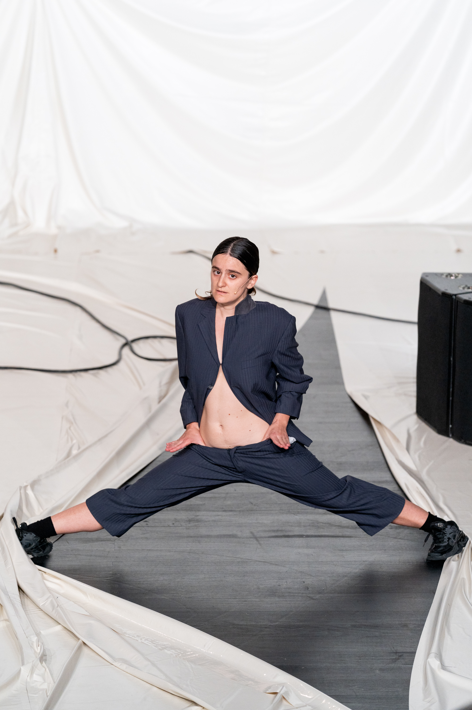

Dance · Theatre · Performance
A physical and vocal performance dissecting toxic masculinity through humour, ventriloquism and repetition.
A choreographic and vocal performance currently in development, exploring emotional shock, memory and transformation.
Mathilde Invernon is a French-Spanish actress, dancer, ventriloquist and choreographer based between Geneva and Europe.
General & Touring
ciecarmenchan@hotmail.com
Production
Vanessa Ferreira Vicente
SVP Production
vanessa.ferreiravicente@svpprod.ch